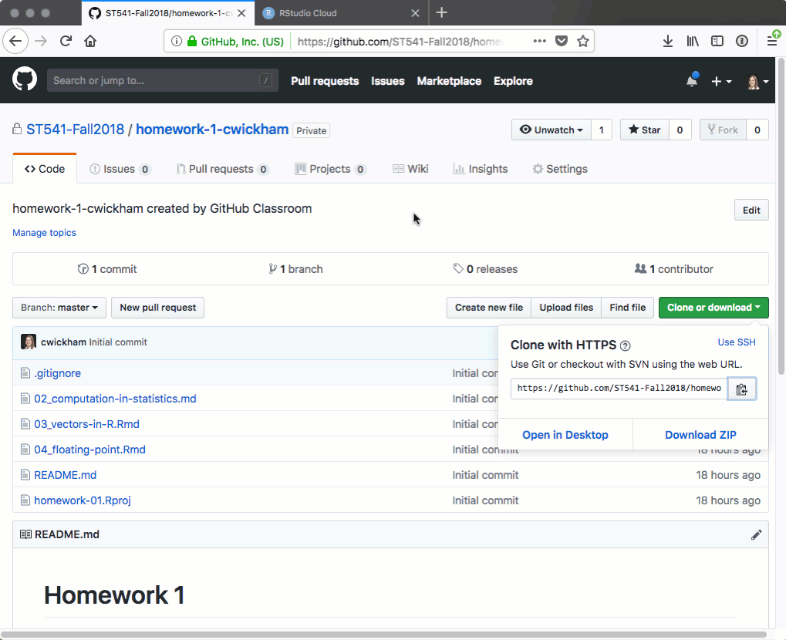
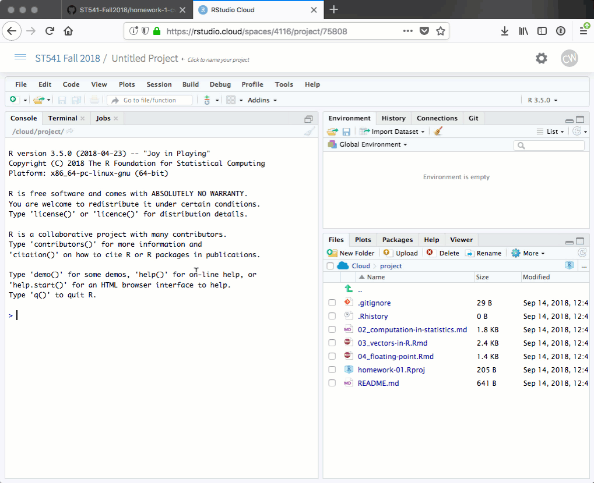

Lab 1 - An introduction to git and github
Sep 21st 2018
Learning Objectives
I’ll be using github to give you your homeworks, you’ll be using it to submit homeworks. Today in lab, you’ll practice this workflow in preparation for your first homework.
By the end of lab you should be able to:
- Find and access a homework assignment.
- Navigate a github repository to find its README, URL for cloning, and Issues.
- Clone a github repository into RStudio Cloud.
- Edit, commit, and push your work to github.
Getting started
Get the required accounts (if you haven’t already)
Sign up for github. Remember this advice about picking a username. Remember your username and password, you’ll need them again soon.
Sign up for rstudio.cloud, then join the ST541 Fall 2018 workspace by following this link
Accepting a homework assignment
- In canvas find Homework 1 under Assignments.
- Follow the link provided to github.
- Github will start to copy over the required files
- Once it’s finished follow the link to your new repository

- Take a look around This is a git repository, repo for short. A git repo is just a folder of files along with a history of those files. When you host a git repository on github you get some nice extras, some most relevant to us:
- An easy way to navigate the files
- Previews of certain files types
- Issues - a way to start discussions on the repository
Your Turn:
- What is the name of your repository? How does it differ from your neighbors?
- How can you tell this repository is private?
- Scroll down, you should see the contents of the file
README.md. What’s in this file?
Get your homework 1 repository into rstudio.cloud
To actually to do some work on your homework, you’ll “clone” this repository to rstudio.cloud as a project.
In github, click the “Clone or Download” button, then copy the URL given to the clipboard.
Head to the ST541 Fall 2018 workspace on RStudio Cloud, click the small arrow next to “New Project” and select “New project from Git repo”.
Paste in the Clone URL you copied earlier. You’ll be prompted for your github username and password. RStudio Cloud will then clone your repo into an RStudio Project.

Take a look through the files in the Files pane. How do these compare to those on github?
Preliminaries in rstudio.cloud
There are a few things we need to do to tell git who we are before working on this project. (You’ll need to do this with each new project in RStudio Cloud).
In the Terminal in your RStudio Cloud project, copying the following, but substituting in your name and email address:
git config --global user.email "your email here"
git config --global user.name "your name here"
git config --global credential.helper 'cache --timeout 3600'The last line extends the time interval that our github username and password are valid for, so you should only be asked for it once more in lab. You can use the line:
git config --global --listto check you’ve set them correctly.

Workflow
The link between your project in RStudio and the files on github isn’t dynamic. The files on github are only updated when you ask them to be. The workflow I encourage is:
- Do some work in RStudio Cloud
- Commit your changes to git
- Push your changes to github and repeat.
Let’s work through those steps to complete the first task on Homework 1.
Make edits in README.md
In your project in RStudio Cloud open up
README.md. You might like to compare the contents of this file to that shown in your repo on github.com.README.md is a Markdown file, a plain text format that allows for simple formatting like section headings and lists. On Github Markdown files get rendered into a nice formatted preview.
Do some work Edit
README.mdin RStudio Cloud to add your name afterName:in the file. Save the file.Right now this edit just lives in your project on RStudio cloud, for me to be able to see you’ve completed this task, you’ll have to commit the change to git, then push the change to github.
Commit In the Git pane, you’ll see the file
README.mdbecause it has changed since from the most recent version committed. To commit this change, we need to stage the file (check the box next to its name), then commit.A new window will open. You can browse any changed file here and see what has changed (although only those that are staged will be commited). In the “Commit message” area, describe the change you’ve made then hit the Commit button.
Push This change still only lives here in RStudio, to send it to github, hit Push.
Head back to Github and see your change is now recorded there.

Your Turn: Practice this workflow again by editing README.md to check off the first task. Add an x between the [ ] next to the first task, commit, and push. Take a look on github to see the result.
Rmarkdown, markdown and github
Markdown only adds formatting for plain text. It doesn’t recognize R code. For that we need Rmarkdown.
Open 03-vectors-in-R.Rmd, an Rmarkdown file. If you haven’t seen RMarkdown before you should work though this set of lessons.
Take a look at the YAML header, the bit between the
---. Here, we are asking for an HTML output, but also to keep the intermediate Markdown (md) file.Knit the file and verify it produces both 03-vectors-in-R.md and 03-vectors-in-R.html.
Commit and push both 03-vectors-in-R.md and 03-vectors-in-R.html
Head to Github and compare the three documents. Which file looks best on github? Which file do you need to edit to complete the assignment?
Submitting homework
Completing the homework now just involves completing all the tasks as set out in README.md.
When you are done and are ready to submit, first check you’ve pushed all your changes to github. Head to github and check the files there reflect what you want to be graded.
When you are ready, head to canvas and submit your github repository URL in the Homework 1 assignment. This signals that you are ready for your work to be graded.
We will grade all commits up to the due date.
If you have time, you might want to read through the other tasks in Homework 1 and pick one to get started on.
Getting setup on your own computer.
You are welcome to complete all your work on your local computer without using RStudio Cloud, however you will need to get git installed and talking to RStudio. Follow chapters 4 through 13 in Happy Git and GitHub for the useR to get there.
But, why?
Why are we using git/github? It’s a fantastic way to organize the myriad of files we generate in any data analysis project and facilitates sharing and collaboration.
If you want to know more, I’d read Sections 1-4 of:
Bryan J. (2017) Excuse me, do you have a moment to talk about version control? PeerJ Preprints 5:e3159v2 https://doi.org/10.7287/peerj.preprints.3159v2